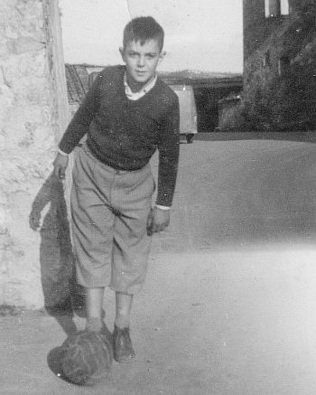
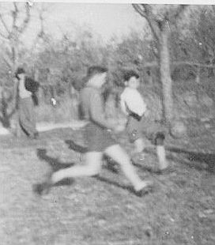

Quercegrossa (Ricordi e memorie)
CAPITOLO XI - COSE D'ALTRI TEMPI
Torna all'Indice Cose d'altri tempi
Indice dei Capitoli
La pagina sportiva
Tra i grandi avvenimenti sportivi che hanno interessato Quercegrossa primeggia il passaggio del Giro d’Italia il 31 maggio 1935 per la tappa Roma - Siena - Firenze vinta dalla maglia rosa Bergamaschi, e, dopo 27 anni, quello del 1962, tappa Montecatini - Perugia vinta da Bailetti. Venendo da Castellina, il gruppo si era allungato e alla curva passarono uno alla volta in fila indiana. Rimanendo in ambito ciclistico rammento le numerose gare dilettantistiche che passarono da Quercegrossa, con i più appassionati tifosi in prima fila a tirare secchi d’acqua ai boccheggianti corridori, con Armando Losi che chiedeva soldi a tutti per il traguardo volante. Una striscia di bianco in terra all’altezza della scuola vecchia e la somma raccolta consegnata alla staffetta che poi l'avrebbe data al vincitore del traguardo volante.
I primi calci organizzati a Quercegrossa furono dati al tempo di don Francesco nel 1949, quando mise su la squadra di calcio. Landino fornì alcune paia di scarpe e il pallone. Furono intraprese le prime amichevoli. Si giocava in ridotti spazi, magari tra piante e ulivi, e i riciclati palloni di Landino ferivano la testa con le grosse cuciture oppure si sbuzzavano facilmente. Successivamente si ricorda un secco 0-5 subito a Fonterutoli da quei calciatori improvvisati, immortalati nella foto. Da destra: Bernardino Castagnini (seduto), Giancarlo Brogi, Giulio Nencioni, Marcello Landi, Franco Carusi e Raffaello Mori col pallone in mano. Il giovane in bicicletta è Cesare Olmastroni di Fonterutoli, il futuro notissimo artista.


Un atteso appuntamento annuale, fino al 1958, furono le Mille miglia. La corsa passava lungo la Cassia e si accedeva al percorso a Fontebecci oppure da Lornano all’altezza dell’Etrusco. Un rombo in lontananza e una emozione: “Attenti arriva!”, e tutti gli occhi puntati al numero per segnarne il passaggio sulla Nazione nell’elenco degli iscritti che riempiva pagine intere. Negli anni Cinquanta quando la strada era sterrata non mancavano le corse di moto, con noi ragazzi al sicuro dentro le finestre basse del palazzo da dove si osservava con apprensione il passaggio rombante dei mezzi seguiti da una nuvola di polvere.
In basso: il Giro della Toscana a Quercia, e il Giro d'Italia del 1962.
|